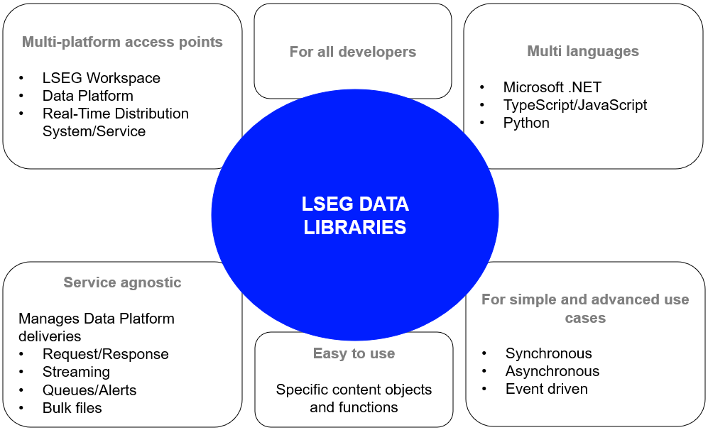
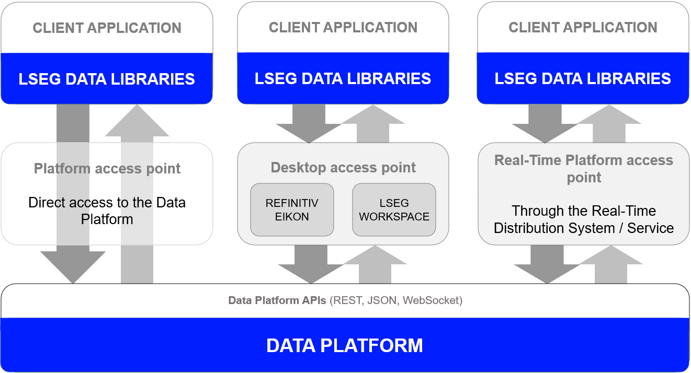
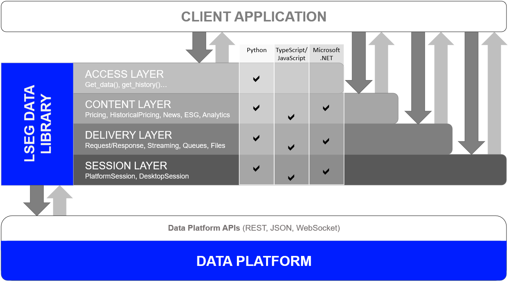
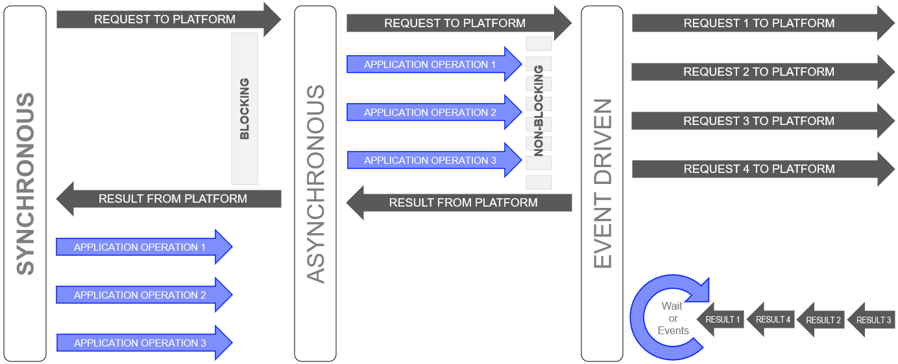

LSEG Data Libraries are designed with simple and consistent interfaces enabling your applications to connect to LSEG data through its different access points. Once connected, your applications can rely on easy-to-use objects and functions to access the breadth and depth of data services available on the platform. For very specific needs, you can also leverage the service-agnostic lower layer, providing you with access to the fine-grained details of each platform service.

Note: High performance scenarios, which represent a minority of customer use cases, are addressed by the LSEG Real-Time SDK (C++, Java) and its APIs (Enterprise Message API, Enterprise Transport API).
As previously outlined, the developer has the choice to access the platform from a specific access point ranging from the desktop (Refinitiv Eikon or LSEG Workspace), through high-performance onsite deployments (LSEG's Real-Time Distribution System), or through cloud-based services (Data Platform).
Depending on the specific access point, developers should not have to learn and use different APIs. The same API and libraries should work seamlessly across the platform, using the same paradigms, experience the same functional behavior and receive the same data regardless of how content is accessed.
This API is able to be used by many different types of developers of varying skill levels and application goals, and for a wide range of different use case scenarios.
These scenarios can be as basic as getting the current value of an instrument through a simple function call, or they may be as sophisticated as receiving an alert in real time when the value of an instrument changes within the market.
LSEG Data Libraries will address these various needs by providing several abstraction layers and operation models, such as those described below.
Depending on the access point it uses to connect to the Delivery Platform (formerly Refinitiv Data Platform), either directly to the platform or via Eikon/LSEG Workspace or via a locally platform, your application will create and use one of the different session types defined by the libraries. With the exception of this session creation phase, the design of the LSEG Data Libraries is normalized to provide consistent interfaces, regardless how you access content. For example, applications built to access streaming content from the LSEG Workspace can seamlessly switch to another supporting access point (like direct access to the Data Platform) with minimal code changes. The goal is to provide the developer an intuitive interface that defines consistent APIs through multiple access points when accessing data services within the platform.
The following diagram presents the different platform access points available to the developer:

The abstraction layers of LSEG Data Libraries target different needs as well as different types of developers.
Depending on the skill and comfort level of the developer, the API offers general abstraction (session and delivery) layers specific to the delivery mode of the content, to more business-specific (content and access) layers defining interfaces more suited to the nature of the data. However, even the lower layers (session and delivery) provide an intuitive and easy-to-use interface.
All these layers can be used together within the same application.

Whichever access point is being used, access to LSEG data requires authentication and connection semantics to communicate and retrieve content. LSEG Data Libraries provide this managed access through an interface called a Session. Once the session has been established, it can be used with objects and functions of other layers to retrieve data from the platform.
The delivery layer implements classes that can be used to interact with the different delivery modes provided by the Data Platform to retrieve data:
For each of these delivery modes, defined classes can be used to retrieve data from the platform in raw JSON format.
Classes defined in the delivery layer are not dependent on any specific data service. In other words, they are service agnostic. Designed as a low abstraction layer of the library, the delivery layer targets developers who need specific features that are not offered by other higher level abstraction layers (content and access). This layer targets the professional developer but can also be used by financial coders with good programming skills.
The content layer refers to logical market data objects, largely representing financial items, such as level 1 market data prices and quotes, order books, news, historical pricing, company research data and so on. These objects are built on top of the delivery abstraction layer and provide value-added capabilities to manage and access the content within the interface.
For example, the pricing interface is a thin layer on top of data services offering real-time market data. In addition, interfaces such as historical pricing and Environmental and Social Governance (ESG) are available to allow intuitive access to request and process results. While the native back-end data format supports JSON structured messages, the content layer conveniently prepares data messages in a user-friendly format specific to the programming language. Examples of these languages include Pandas DataFrames for Python, JSON in TypeScript or JavaScript and .NET.
The Content layer can be used by both professional developers and financial coders. It provides great flexibility for familiar and commonly used financial data models.
The access layer defines interfaces more suited to scripting languages such as Python. The goal of these interfaces is to allow researchers, data scientists or the casual developer to rapidly prototype solutions within interactive environments such as Jupyter Notebooks. The access layer provides data access in a single function call such as retrieving current data for pricing and fundamentals, retrieving historical intraday and interday data, and so on. Because this layer is built on top of the content layer, it will benefit from convenient abstractions such as preparing data formats suitable for the specific programming language.
The access layer can be used by both professional developers and financial coders. It provides simple and familiar access to popular scripting languages and preparing data results useful for the particular language.
Note: This layer is only available in the LSEG Data Library for Python.
The abstraction layers outlined above provide several operation models that meet the needs of a large range of use cases, from the simplest to the most advanced. These models are synchronous, asynchronous, and event-driven.

Method or function calls are blocking. The result related to the call is available as soon as the method or function returns control to the calling thread. Synchronous calls are extremely useful when prototyping within scripting environments such as Jupyter Notebooks.
Note: Because of the asynchronous nature of TypeScript and JavaScript, the synchronous operation model is not available in the LSEG Data Library for TypeScript/JavaScript
Method or function calls are non-blocking and return control to the calling thread almost immediately, before the result of the call is available. The asynchronous model allows the calling thread to perform other operations in parallel to the task requested by the method or function call. When performed with the other operations, the calling thread can wait for the requested result to be available (for example async or await paradigm). Applications that require more sophisticated interfaces, such as GUI-based applications, will greatly benefit from asynchronous calls.
With this model, the application registers callback methods or lambda expressions that are called when the requested results are available. Mostly applicable to streaming data, the event-driven model can be mixed with the synchronous model and the asynchronous model.
When mixed with the synchronous model, some callback methods or lambda expressions are called before the method or function returns control to the calling thread. When mixed with the asynchronous model, callback methods or lambda expressions are generally called after the method or function returns control to the calling thread. Event-driven applications are common when building applications that work with streaming data.